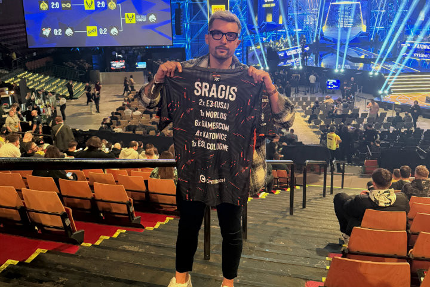

Intel Extreme Masters 2025 Counter Strike - Katowice ▮▪
In February, I headed to Intel Extreme Masters in Katowice once again—this time for the fourth time overall.“It’s one of my all-time favorite events, mainly because the atmosphere inside the Spodek Arena is absolutely unreal. I already touched on that a bit in my article about IEM 2022.
So why write another article about the same event? In 2025, I changed my accreditation and attended as media for the first time. That alone made the whole experience feel different—it brought a new sense of motivation and excitement.
I packed all my filming gear, which honestly took up more space in my suitcase than my clothes. I didn’t want to underestimate anything, so I brought the best equipment I have at home. I mainly shoot on a Sony Alpha A7S III, along with several lenses, a drone, plenty of batteries, and lots of other accessories.
The moment we arrived at the event, I could feel the atmosphere that makes IEM famous all over the world. My goal was to capture and recreate that feeling—and judging by the stats, I think I managed to do just that :). As of today, the video has reached over 120,000 views on social media.
You can see a preview of the video on the homepage, and you’ll also find the full version in my portfolio.
A big thank-you goes to ESL for another accreditation for their event. Katowice have another major advantage: you’re really close to the players, which means there’s plenty of room for great shots and photos. Throughout the entire event, I barely turned off the camera and hardly even had time to grab a coffee in the press room. That’s something I absolutely love—when there’s so much to film and you know the footage will be worth it.
NAVI fans managed to create an incredible atmosphere at this tournament, but unfortunately the team didn’t make it to the final. In the final, Team Vitality faced Team Spirit. Vitality showed their dominance and overall form and won convincingly, 3–0 on maps.
What I really love about ESL events is the accompanying program. Where other events sometimes struggle and there’s nothing to do between matches, ESL excels—you never know where to go first. Booths, autograph sessions, competitions, merchandise sales, and much more. I even bought official Counter-Strike trading cards myself and got really lucky—I definitely didn’t expect to pull a signed Coldzera card, limited to 5/20.
It was a beautiful weekend and the closing of one big chapter. IEM in Katowice is coming to an end and is moving to Krakow, where the first tournament will take place in February 2026—and I’ll be there. Once again, thank you to ESL for approving my accreditation, and I can’t wait for the new chapter in Krakow.
You can once again look forward to plenty of stories, including a daily report, one main big video, and lots of photos. I’ll be sharing everything on social media as well as here on the website.
See you next time,
Štefan

◀ Back to blog